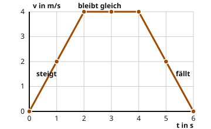

Das Geschwindigkeit-Zeit-Diagramm
Mit einem KI-Tutor lernen
Ein KI-Tutor erklärt dir diese Seite und hilft dir bei den Übungen. Wähl deinen Assistenten:
Mit Claude öffnen Mit ChatGPT öffnen Mit Mistral Vibe öffnen
Du nutzt dein eigenes Konto beim Anbieter. Der Assistent ist kein Angebot von lernapps.net: lernapps liefert nur Inhalte und Übungen. Die Wahl gilt für alle Seiten, nur auf diesem Gerät.
Das Tempo über der Zeit
Im Weg-Zeit-Diagramm hast du gesehen, wie weit ein Wagen vom Start entfernt ist. Jetzt zeichnen wir etwas anderes auf: wie schnell er zu jedem Zeitpunkt ist.
- Geschwindigkeit-Zeit-Diagramm
Ein Geschwindigkeit-Zeit-Diagramm zeigt, wie schnell ein Körper zu jedem Zeitpunkt ist. Die Zeit steht waagerecht, die Geschwindigkeit senkrecht.
Ein Bus fährt an, fährt eine Weile gleichmäßig und bremst dann bis zum Halt. Die Tabelle zeigt sein Tempo.
| Zeit t in s | Tempo v in m/s |
|---|---|
| 0 | 0 |
| 1 | 2 |
| 2 | 4 |
| 3 | 4 |
| 4 | 4 |
| 5 | 2 |
| 6 | 0 |

Jeder Punkt gehört zu einer Zeile der Tabelle. Die Linie verbindet die Punkte.
Quelle: eigene Zeichnung. Lizenz: CC-BY-4.0.Was die Linie dir sagt
Du liest die Linie von links nach rechts.
- Die Linie steigt. Das Tempo wird größer. Der Bus beschleunigt.
- Die Linie ist waagerecht. Das Tempo bleibt gleich. Der Bus fährt gleichmäßig.
- Die Linie fällt. Das Tempo wird kleiner. Der Bus bremst ab.
Vorsicht
Im Weg-Zeit-Diagramm hieß waagerecht: Der Wagen steht. Hier ist es anders. Eine waagerechte Linie heißt: Das Tempo bleibt gleich, der Bus fährt weiter. Steht der Bus, liegt die Linie auf der Null. Eine fallende Linie heißt auch nicht, dass der Bus zurückfährt. Er wird nur langsamer.
Ausprobieren
Oben fährt der Bus auf der Bahn. Die Punkte zeigen seinen Ort nach 0, 1 bis 6 Sekunden. Darunter siehst du sein Geschwindigkeit-Zeit-Diagramm. Die Achsen bleiben gleich.
Mit + und − stellst du das Tempo für jede Sekunde ein, von 0 bis 4 m/s. Am Anfang ist die Fahrt des Busses eingestellt. Mit Zurücksetzen kommst du dahin zurück. Ändere zum Beispiel das Tempo bei 4 s. Wie ändert sich die Linie? Wie ändern sich die Abstände der Punkte auf der Bahn?
Bus an der Haltestelle: Der Bus fährt langsam an, fährt dann gleichmäßig und bremst zuletzt bis zum Halt ab.
Der Bus auf der Bahn
Geschwindigkeit-Zeit-Diagramm
Tempo einstellen
Werte als Tabelle
| Zeit t in s | Tempo v in m/s | Weg s in m |
|---|---|---|
| 0 | 0 | 0 |
| 1 | 2 | 1 |
| 2 | 4 | 4 |
| 3 | 4 | 8 |
| 4 | 4 | 12 |
| 5 | 2 | 15 |
| 6 | 0 | 16 |
Ein Bus fährt 6 Sekunden lang. Du kannst sein Tempo bei jeder Sekunde zwischen 0 und 4 m/s einstellen und siehst dazu die Bahn und das Geschwindigkeit-Zeit-Diagramm.
Am Anfang gilt die Fahrt aus der Tabelle oben: 0, 2, 4, 4, 4, 2 und 0 m/s bei 0 bis 6 s. Die Linie steigt, ist dann waagerecht und fällt.
Macht man das Tempo bei einer Sekunde größer, steigt die Linie dort höher. Macht man es kleiner, sinkt sie.
Übung
Aufgabe Nr. 1
Aufgabe Nr. 1
Ein Auto steht an der Ampel. Dann fährt es los und wird vier Sekunden lang immer schneller. Danach behält es sein Tempo. Stelle das Geschwindigkeit-Zeit-Diagramm ein. Das Tempo bei 0 s ist 0 m/s.
Lösung
Tempo bei 0 bis 6 s: 0, 1, 2, 3, 4, 4, 4 m/s
Übung
Lösung
Von 0 s bis 2 s
In dieser Zeit steigt die Linie. Das Tempo wird größer, der Wagen beschleunigt.
Von 2 s bis 4 s richtige Antwort
Hier ist die Linie waagerecht. Das Tempo bleibt gleich.
Von 4 s bis 6 s
In dieser Zeit fällt die Linie. Das Tempo wird kleiner, der Wagen bremst ab.
Bei gleichem Tempo ist die Linie im Geschwindigkeit-Zeit-Diagramm waagerecht.
Mehr dazu:
Übung
Lösung
Richtige Antwort: 2 m/s
Bei 5 s liegt der Punkt auf der Höhe von 2 m/s. Der Wagen fährt dann mit 2 m/s.
Mehr dazu:
Übung
Lösung
Richtige Antwort: Die Aussage stimmt nicht.
Eine fallende Linie bedeutet, dass das Tempo kleiner wird. Der Wagen bremst ab, fährt aber weiter in dieselbe Richtung.
Mehr dazu:
Knobeln: Für alle, die mehr wollen.
Aufgabe Nr. 1
Aufgabe Nr. 1
Ein Zug fährt zwei Sekunden lang gleichmäßig mit 3 m/s. Dann bremst er zwei Sekunden lang ab. Danach fährt er gleichmäßig weiter. Stelle das Geschwindigkeit-Zeit-Diagramm ein. Das Tempo bei 0 s ist 3 m/s.
Lösung
Tempo bei 0 bis 6 s: 3, 3, 3, 2, 1, 1, 1 m/s